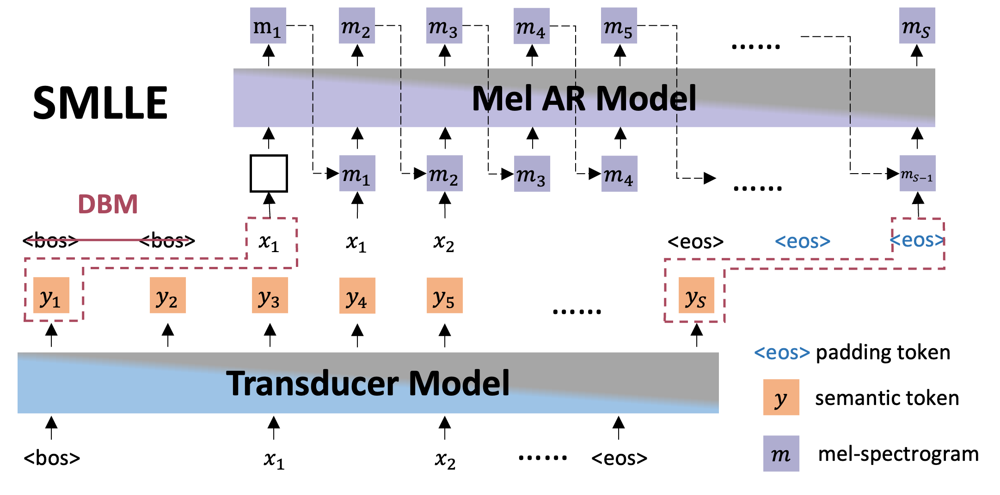

SMLLE: Zero-Shot Streaming Text to Speech Synthesis with Transducer and Auto-Regressive Modeling
Abstract
Zero-shot streaming text-to-speech is an important research topic in human-computer interaction. Existing methods primarily use a lookahead mechanism, relying on future text to achieve natural streaming speech synthesis, which introduces high processing latency. To address this issue, we propose SMLLE, a streaming framework for generating high-quality speech frame-by-frame. SMLLE employs a Transducer to convert text into semantic tokens in real time while simultaneously obtaining duration alignment information. The combined outputs are then fed into a fully autoregressive (AR) streaming model to reconstruct mel-spectrograms. To further stabilize the generation process, we design a Delete \(\langle Bos \rangle\) Mechanism that allows the AR model to access future text introducing as minimal delay as possible. Experimental results suggest that the SMLLE outperforms current streaming TTS methods and achieves comparable performance over sentence-level TTS systems.
This page is for research demonstration purposes only.
Architecture Overview

The overview of SMLLE. SMLLE has two key components: (1) A Transducer based streaming model to generate the semantic tokens, based on the text.
(2) An AR streaming model to generate the mel spectrum sequence for the final speech reconstruction, based on the semantic token sequence generated by the first component and the duration-aligned text with the duration information from the Transducer model.
Samples for Cross-Sentence Voice Clone
Text: Text transcription.
GroundTruth: The acoustic groundtruth.
SMLLE-Transducer: Speech waveform generated by proposed SMLLE Transducer Stage.
SMLLE-Mel AR: Speech waveform generated by proposed SMLLE Autoregressive Stage.
MELLE: Speech waveform generated by baseline MELLE.
VALL-E: Speech waveform generated by baseline VALL-E.
YourTTS: Speech waveform generated by baseline YourTTS.
| Text |
GroundTruth |
SMLLE-Transducer |
SMLLE-Mel AR |
MELLE |
VALL-E |
YourTTS |
Interactive Speech Generation
Move the slider or click the text to simulate the streaming generation process. The speech will update automatically as you adjust the slider position. Due to the presence of DBM, the SMLLE will not trigger the AR Stage when only is input, and at this point, the Zero-shot Streaming Speech does not exist.
Ethics Statement
Since SMLLE could synthesize speech that maintains speaker identity, it may carry potential risks in misuse of the model, such as spoofing voice identification or impersonating a specific speaker. We conducted the experiments under the assumption that the user agrees to be the target speaker in speech synthesis. If the model is generalized to unseen speakers in the real world, it should include a protocol to ensure that the speaker approves the use of their voice and a synthesized speech detection model.